| 日付 | 2010年7月18日（日） |
|---|---|
| 山域 | 草津周辺 |
| メンバー | 友人（男1女1） |
| 山行形態 | 日帰り |
| アクセス | 電車、バス |
| ルート (Map) | 菅平高原→四阿山→根子岳→菅平高原 |
海の日連休から夏山シーズンが始まる。
とは言っても例年この時期は梅雨が明けておらず、
ぐずついた天気が続くのだが、今年は3日とも晴れ予報。
3連休の中日を使って、四阿山に登ってみることにする。
9:11 菅平高原ダボスバス停到着。標高1315m。
空は快晴。すでに相当気温が高い。
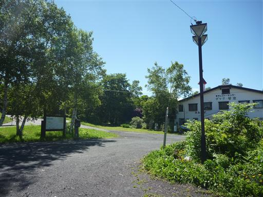
バス停からは近くにスキー場がたくさん見える。冬は大勢のスキー客で賑わうところだ。
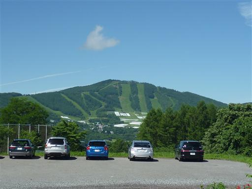
少々藪っぽい道を歩いて登山口をめざす。
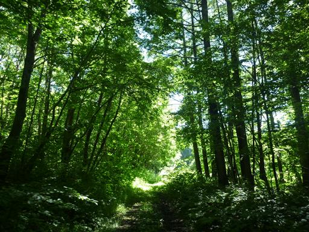
菅平牧場を通過して行く。通過するだけなのに入場料を取られてしまう。

牛さん達は日影でお休み中。
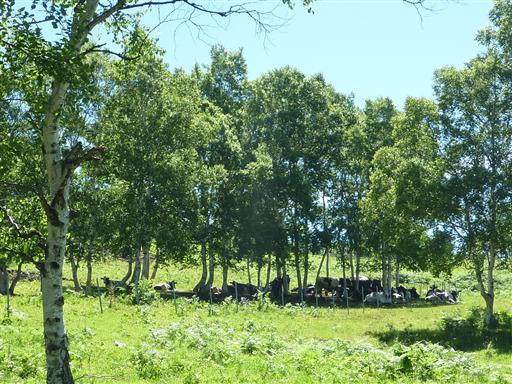
少し高台に登ると、北アルプスの山並が真正面に見える。思った以上に近い。
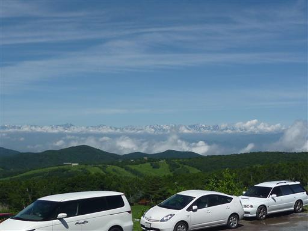
直射日光が当たる車道が終わり、ようやく登山道入口に到着。
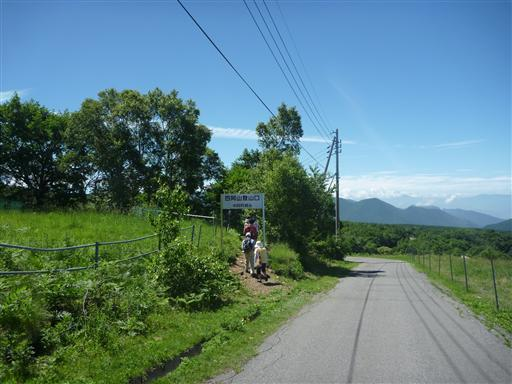
沢があったりして、少し涼しくなる。
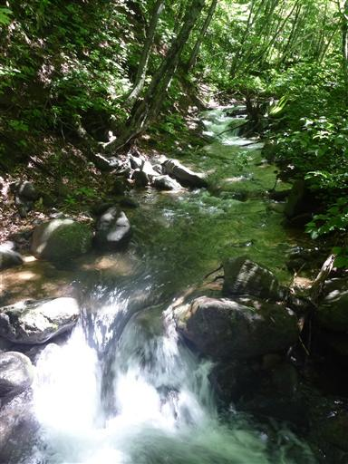
大型動物と遭遇。カモシカだろうか？
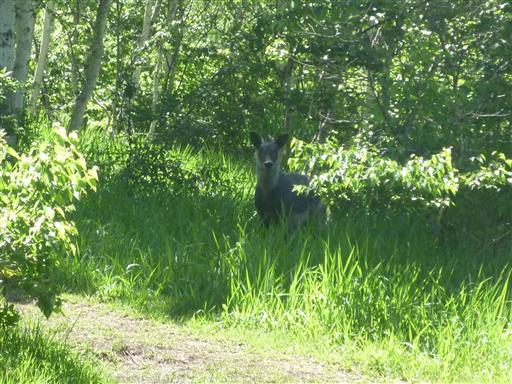
あたりはダケカンバ林が広がっている。
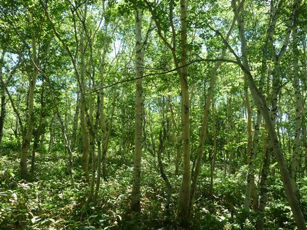
昼に近くなると、どんどんと雲が湧いて出てくる。遠くの雲は不思議な形をしている。

森林限界を抜け、暑い日差しの中を登っていく。汗が止まらない。
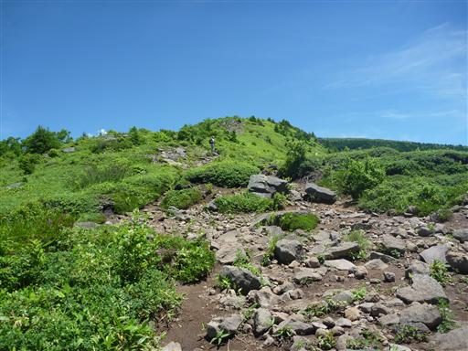
ミネウスユキソウ。ウスユキソウの中では一番良く見かける種だが、一番美しくない。
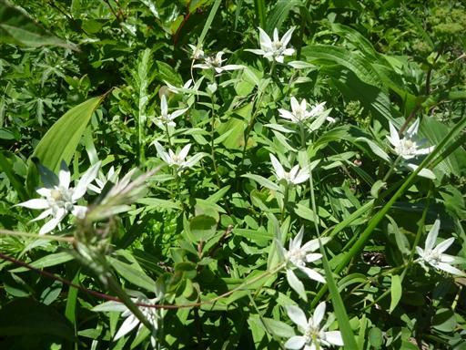
お隣の根子岳の姿がきれいに見えている。
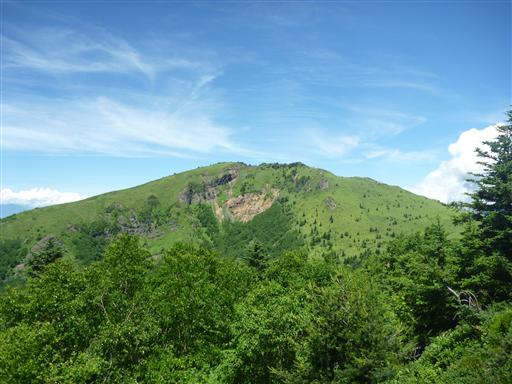
山頂近くの広場では大勢の人が休憩している。大量の学生グループのようだ。

ここから山頂まではすぐ。木段を登っていく。
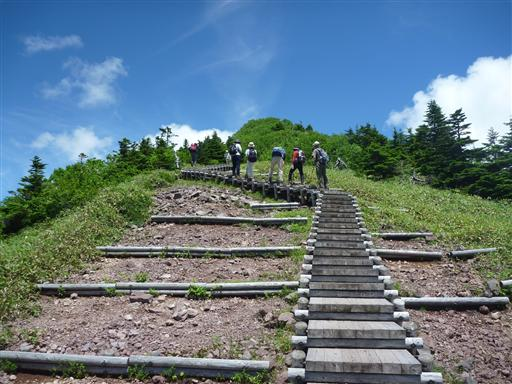
12:29 四阿山山頂到着。標高2354m。
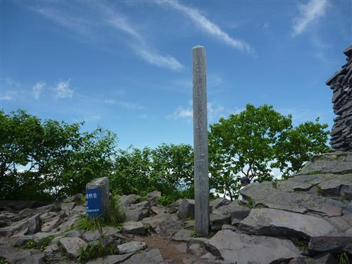
狭い山頂は大勢の人で賑わっている。3連休の中日で、日帰りの山なのに大混雑だ。
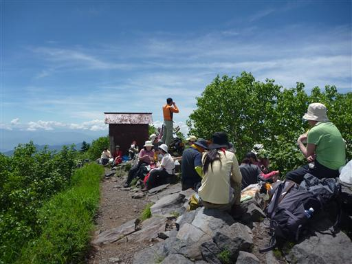
四阿山から根子岳への道は、樹林帯の中を急降下していく。
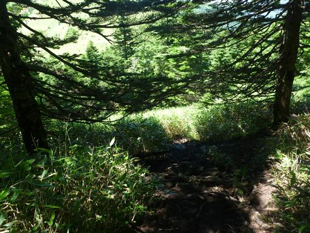
最低鞍部からは再び登り坂。一面に広がる笹原が美しい。
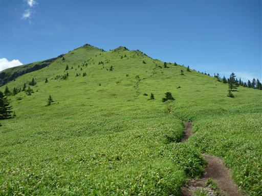
山頂付近は崖が連なっている。この山は火山なので、その名残だろう。
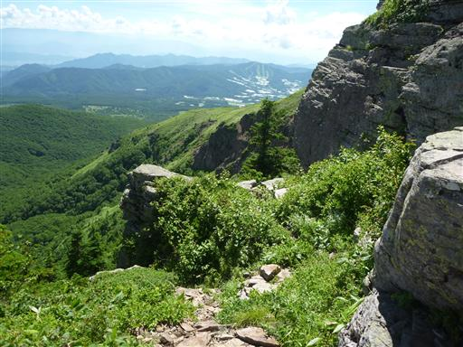
14:04 根子岳山頂到着。標高2207m。
この山は四阿山とセットで登られることが多い。
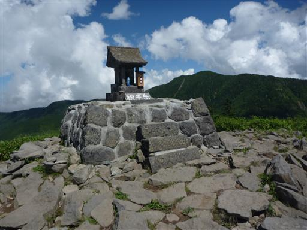
山頂からの展望。昼を過ぎて展望はだいぶ鈍くなってきた。北アルプスはもう見えない。
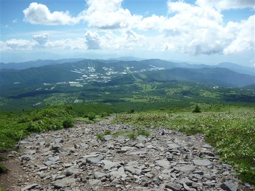
下山は一直線。ぐんぐん下っていく。
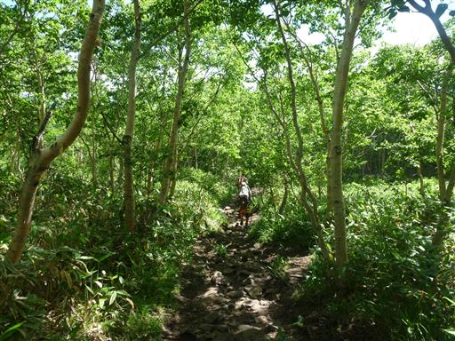
マルバダケブキと蝶。
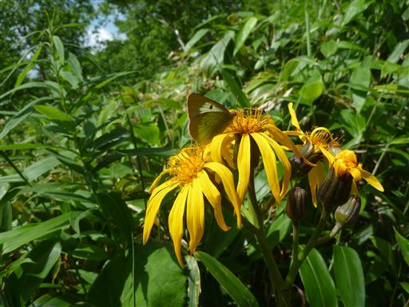
下山地点にある売店でソフトクリームを食べる。たくさんの人が並んでいて、ずいぶん待たされた。
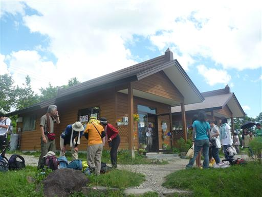
16:16 菅平高原ダボスバス停到着。
直射日光が照り付ける暑い暑い中での登山だった。
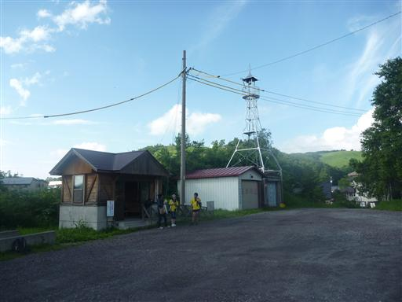